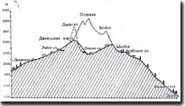
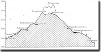
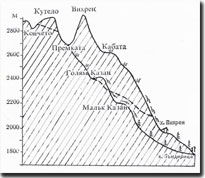

Пирин'2005
[24.08.2005]
Новини:
Последни новини преди
тръгване!
Сборен пункт на колите - гарата в Добринище в 11:00 часа. Оставяме
колите на паркинг в почивна база на БДЖ - намира се някъде около гарата
(уредено!). Автобус ни взема и ни откарва до Долна станция на
лифта. Оттам е ясно ...
Има възможност в неделя (на връщане) да ангажираме автобус (може и
същия, който ще ни вози утре) за маршрута х.Вихрен - паркинга на колите
в Добринище.
Има 2 свободни места! Може да
поканите приятели и да ми се
обадите !
Напомняне:
Трябва да се носи "суха" храна за обяд, вечеря и закуска на х.Безбог и
за обяд по пътя от х.Безбог за х.Демяница.
На х.Демяница имаме вечеря, закуска и суха храна за обяд и на х.Вихрен
имаме вечеря и закуска.
[19.08]
Цена за 1 човек за мероприятието - 35 лв., включващи:
- 3 нощувки
- вечеря на 26.09
- закуска, обяд и вечеря на 27.09
- закуска на 28.09
- планинска застраховка
Парите трябва да се съберат до сряда, когато трябва да ги внеса в БТС.
Събирачи: Петя Асенова - НБУ, 611 - 2 (от понеделник)
Николай Киров - ИМИ-БАН, 406
За да направя застраховката, е необходимо да предам списък на туристите
с имена по лична карта и ЕГН.
Тази информация събирам по е-мейл или телефон:
От 8:10 до 16:30 - 979 3850
Иначе: 2 978 9826, 887 198 221
(и няма да я публикувам на сайта -:)
Резервацията
за нощувки в хижите и осигуряване на храна е
направена! Ще
се ходи !
Списък на желаещите да участват в
мероприятието:
Номер?
|
Кой?
|
Колко?
|
1
|
Н. Киров |
4 (кола)
|
2
|
П. Асенова |
3 (кола)
|
3
|
М. Маринов |
2
|
4
|
И. Ланджев |
2
|
5
|
П. Стайнов |
2 (кола)
|
6
|
Р. Стайнов
|
-
|
7
|
И. Кирова (подгрупа)
|
5 (кола)
|
|
Общо до сега:
|
18
|
План
(окончателен):
1. ден (25 август, четвъртък)
София - Банско (кола или автобус)
Банско - Добринище - х. Гоце Делчев - Долна Лифтова Станция
(маршрутка)
Долна Лифтова Станция - х. Безбог(2236) (лифт)
х. Безбог - вр. Безбог(2645) - х. Безбог (3 часа) [по желание]
2. ден (26 август, петък)
х. Безбог - х. Демяница(1895) (5 часа)
ЖЪЛТА МАРКИРОВКА
3. ден (27 август, събота)
х. Демяница - х. Вихрен(1950) (5 часа)
ЗЕЛЕНА МАРКИРОВКА
[вариант х. Вихрен - х.
Бъндерица(1810) (20 мин.)]
4. ден (28 август, неделя)
х. Вихрен - вр. Вихрен(2914) - х. Вихрен (4 часа) [по желание]
х. Вихрен - Банско (маршрутка)
Банско - София (кола или автобус)
Има и други варианти с подобна
трудност като окончателният вариант ще
се определи в зависимост от свободни места за нощувки в хижите.
За начинаещите туристи (другите да не
го четат!) !!!
"Противници" на туриста в планината:
- слънце
- вятър
- дъжд
- студ
- жега
- тъмнина
- умора
- глад
- жажда
- мръсна хижа
- лош хижар :)
Съвети за екипировката за похода или как да се преборим с "противника":
1. Раница, за предпочитане тип "самар"
2. Обувки - туристически (зимни) + джапанки или сандали
3. Яке + дебела фланела (за температури от 0 до 30 градуса)
4. Дъждобран (или яке), найлонови пликове за ходене с мокри обувки
5. Шапка, слънчеви очила, крем (против слънце)
6. Лекарства - аспирин, суправит или друго с витамини и минерали;
Sulfaguanidine, витамини B
7. Фенерче + свещ и кибрит
8. Ластични наколенки (ако имате проблеми със слизането)
9. Спален чувал (по желание - в хижите обикновено дават чаршафи)
10. Пластмасово шише с вода (да НЕ се носи стъкло!), може и термос
11. Шоколад, вафли, и др. подобни, плодове
12. 20-300 г силен алкохол (ром, коняк, водка) - за всеки случай
13. Фотоапарат, фотокамера, бинокъл, компас, GPS!) лаптоп;) пътеводител
на Пирин, карти на Пирин, ... [всичко това по желание]
14. Други :)
Връзки
Информация за туризма в планините - хижи, маршрути, пътеписи,
снимки и мн. други:
Водач
за българските планини
В Google напишете "Пирин хижа" и
ще получите много интересни сайтове за туризъм из Пирин планина.
Граф на хижите и някои заслони в Пирин,
разстоянията между тях (приблизително часа) и изходни пунктове.
Информационен
център на БТС (в подлеза пред Спортната палата):
048/96-95-02 (БТС мрежа: 240), 02/980-12-85
Информация от 04.08.05
08:32
непознат:
"От Овча купел има автобус до Гоце Делчев в 7,00 ч.
и
пристига в Добринище преди 11,00 ч. Тел. на автогарата 955-53-62. От
Централната автогара има в 7,30 и 8,30 ч. също за Г.Д. Цената на билета
е 8 или 9 лв. За транспорт до х. Г.Делчев се обадете на гишето в
Автогара Добринище и касиерката ще извика автобусче. Лифта работи при
групи, цената е 3 лв. на човек + 1 лв. на раница (беше такава преди
месец). Надявам се, че съм бил полезен."
Георги: "Да, благодаря.
От Транс 5 ми казаха, че от централна гара до Добринище е 8 лв. и 3
часа."
[25.08]
Автогара Овча купел, София (автобуси за Банско) -
02/9555362
Централна Автогара - сектор 29: СОФИЯ - БАНСКО - ДОБРИНИЩЕ, час
на тръгване - 07:30, [Транс 5], 931-13-85; 0887/280327, цена 10 лв.
[25.08] Хотел Пирин, Банско, ул. "Цар Симеон" 68, (07443) 8051,
8052; Управител: (07443) 8050; Факс: (07443) 8044;
E-mail: hotelpirin@bansko.bg;
Web: http://hotelpirin.bansko.bg
[25.08] Хотелът в Добринище
(07447/21-20, 21-29)
[25.08] Лифт
"х. "Гоце Делчев" - х. "Безбог", Тип: двуседалков,
GSM: 0888/63-43-04, чрез телефона за справки на пощата в с. Добринище -
07447/22-12 или чрез х. "Безбог" (048/90-62-09, 97-40-88, GSM:
0888/28-61-02)
[25.08]
х. Безбог: моб.: 048/90-62-09, 97-40-88, GSM:
0888/28-61-02
Стопанин: ДФ "Социален отдих" - с. Добринище, тел. 22-25 и
23-18, 0747 / 62-09.
Стопанин: "Родина турист-97" ЕООД
(хотелите "Родина" в София и Банско, хотелът в Добринище (07447 /
21-20, 21-29), х. "Гоце Делчев", х. "Безбог", лифтът "Х. "Гоце Делчев"
- х. "Безбог")
[26.08]
х. Демяница:
моб.: 048/96-93-39 (БТС мрежа: 306),
84-76-73 (БТС мрежа: 313), GSM: 0888/91-57-74
Стопанин: Курортен комплекс "Пирин" - гр. Банско, хотел
"Стражите", тел. 07443 / 40-92, 40-91.
Стопанин: ТД
"Вихрен" - гр. Банско, 2770, пл. "Възраждане" № 4, тел. 07443 / 82-79,
факс: 07443 / 82-78; моб. 048 / 76-11-88 (БТС мрежа: 220), 99-64-83
(БТС мрежа: 320)
Стопанин Георги Гемков - 048/969-339; 088/915-774
[27.08] х.
Вихрен: моб.:
048/98-84-88 (БТС мрежа: 252)
Стопанин: Курортен комплекс "Пирин" - гр. Банско, хотел
"Стражите", тел. 07443 / 40-92, 40-91.
Стопанин: ТД "Вихрен" - гр. Банско, 2770, пл. "Възраждане" № 4,
тел. 07443 / 82-79, факс: 07443 / 82-78; моб. 048 / 76-11-88 (БТС
мрежа: 220), 99-64-83 (БТС мрежа: 320)
[27.08] х.
Бъндерица: моб.: 048 /
86-27-62 (БТС мрежа: 277); GSM: 0887/50-38-42
Стопанин: Тур. д-во "Вихрен" - гр. Банско, пл. "Възраждане" 2,
тел. 07443 / 26-83.
Стопанин: ТД
"Вихрен" - гр. Банско, 2770, пл. "Възраждане" № 4, тел. 07443 / 82-79,
факс: 07443 / 82-78; моб. 048 / 76-11-88 (БТС мрежа: 220), 99-64-83
(БТС мрежа: 320)
[28.08] Банско: Услуги Банско - 07443/31-31; Автогара
Банско -
07443/24-20; Автогара Овча купел, София (автобуси за Банско) -
02/955-5362
Резервация на храна и нощувки в хижите:
Храна в хижа - около 8 лв. за 1
човек за 1 ден
Предлагам:
1. Да си носим храна за обяд и вечеря на 25.8 (четвъртък) и за закуска
на 26.08 (х. Безбог) и обяд на 26.08 (по пътя х.Безбог - х.Дамяница)
2. Поръчаме вечеря на 26.08, закуска за 27.08 (х. Демяница) и суха
храна за обяд (по пътя х. Демяница - х.Вихрен).
3. Поръчаме вечеря на 27.08 в х.Вихрен (или Бъндерица) и закуска на
28.08 (неделя).
4. Обяд на 28.08 - в Банско.
Нощуване в хижа -
около 5 лв. за 1 човек за 1 нощ
Ако някой има други
предложения - e-mail: nkkirov@gmail.com
Вероятно ще се наложи
да заплатим предварително след
потвърждаване на резервациите.
Маршрути:
х. Безбог - х. Демяница (около 5ч)
х. Безбог
|
2236 |
0ч
|
| Безбожки превал |
2400
|
|
| Поповото езеро |
2200
|
1ч15м
|
| Самодивска (Дженгалска) порта |
2500
|
|
| Валявишките езера |
2250
|
3ч
|
х. Демяница
|
1895
|
5ч
|
х. Демяница - х. Безбог
времетраене 5 - 6 часа
Широката и добре очертана пътека
от х. Демяница за х. Безпог тръгва на юг през гората, през левия бряг
на р. Валявица и през поляни и камънак стига до Вилявешкия ригел. След
ригела на реката се пресичат каменисти пасажи и се стига до местността
Тияците. Тук р.Валявица тече бавно и тихо с много меандри. След леко
изкачване се преминава покрай малко езерце и голямото Валявишко езеро,
от където започва реката. Навлиза се във Валявишкия циркусограничен от
билната линия, свързваща върховете Валявишки чукар, Момин двор, Дженгал
и южните склонове на вр. Малък Полежан. Западните склонове на вр.Дженгал и
Дженгалския гребен представляват отвесни гранитни стени високи около
120м., които са обект за алпийски изкачвания. Голямото Валявишко езеро
е най-голямото от Валявишката езерна група, разположено в долната част
на обширния Валявишки циркус на 2280м.н.в., дълго е 480м., широко
275м., дълбоко 19м. И има площ 85дка и обем 664 800куб.м. В северната
му част има двувръх остров. От тук движението продължава в източна
посока по продължително изкачване към превала Дженгалска порта
(2500м.н.в.) – най-високата точка на маршрута.Пътеката е стъмна и
камениста,а в горната част е едър блокаж. Естествено е тук да се
направи по-дълга почивка, тъй като има какво да се види. Назад са
чудноватия Валявишки циркус с украсяващата го езерна огърлица, а отпред
на изток са се ширнали Родопите. От тук започва стръмно продължително
спускане по камънаци и скални блокове, пресича малки и плитки езера. От
тях до х. Безбог са необходими около 1.30ч.
Правят се няколко къси изкачвания и слизания по добре очертана и
маркирана пътека и се стига до Безбожкия превал. Известен престой тук е
необходим, за да се видят просторните гледки и да се отдъхне след
дългия преход. От х.Безбог със седалкова въжена линия се стига за около
30мин. до х.Гоце Делчев и от там с предварително организиран транспорт
за около 40мин се слиза до Банско.
х. Демяница - х. Вихрен (4ч30м)
| х. Демяница |
1895 |
0ч
|
Василашки езера
|
2250
|
2ч
|
Тодорини очи
|
2500
|
2ч30м
|
Тодорина порта
|
2550
|
|
Бъндеришки езера
|
2200
|
3ч30м
|
| х. Вихрен |
1950 |
4ч30м
|
Х.Вихрен - х.Демяница
Времетраене 4-5ч.
От х.Вихрен се тръгва по
пътеката за Жабешкото езеро, като се върви по разнообразен терен –
тревист, каменост и издигащи се самотни скали. След като се достигне
терасата, на която е разположено Жабешкото езеро, от там започва
стръмното изказване по каменистите серпентини към превала Тодорина
порта. Това е най-високата точка на прехода (2580м.н.в.) и се намира
между върховете Малка Тодорка и Василашки чукар. От тук започва
спускането към Василашкия циркус. Добре очертаната пътека през стръмни и
каменисти склонове достига до двете Тодорини езера (горно и долно),
наричани още “очите на Тодорка”. Горното Тодорино езеро е на
2536м.н.в., то има кръгла форма с дължина 151м., ширина 124м.,
дълбочина 7,7м., площ от 13,2дка и обем 44600куб.м. Долното Тодорино
езеро е по-малко то горното и е разположено над Василашкото езеро от
Василашката езерна група и стига до Рибното Василашко езеро, носещо
името си поради много пъстърва, която се въди в него (2126м.н.в.).
Василашкият циркус е един от най-красивите в Пирин. Обгражда се от
билната линия, свързваща върховете Тодорка, Овчи вал, Василашки чукар и
Типиците. След като се пресече моренният вал Рибното Василашко езеро,
се тръгва по пътека през клека, тревиста местност и иглолистна гора и
след около 20 – 30мин. се стига до х.Демяница (1895м.н.в.)
Изкачване на вр.Вихрен
(2914м.н.в)
Банско - х.Вихрен; (автобус 30- 40мин.); Х.Вихрен - вр.Вихрен -
х.Вихрен (4-5ч.)

Изкачването на върха става по
неговия южен склон, през седловината Кабата за около 3,30ч. Освен по
същия път от върха може да се слезе по пътеката на северозапад до
седловината Премката, от където да се продължи през м.Големия казан към
вр.Вихрен.
Забележка: Времената са дадени
в сайта Водач
за българските планини. Те са съобразени с нормален ход при хубаво
време с 10 минути почивка на всеки час. В нашия случай (според
мен) времената ще са умножени с число (коефициент) от 1.2 до 1.5 в
зависимост от метерологичните условия.
http://www.bansko.bg/tourism/pirin.html
Времето:
http://www.math.bas.bg/~nkirov/2005/pirin05.html
http://server9.math.bas.bg/~nkk/pirin05.html